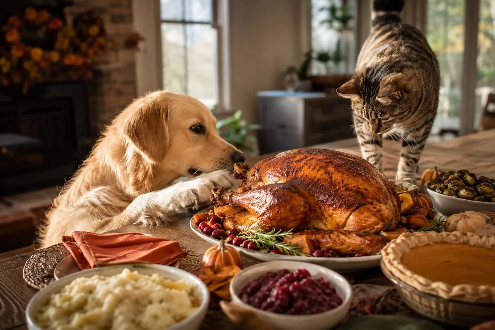

Thanksgiving Foods: What's Safe & What's Dangerous for Pets

Thanksgiving is one of the busiest stretches of the year for pet poison hotlines and emergency vets. A dropped scrap, a raided trash bag or one well-meaning "just this once" plate can turn a happy holiday into a late-night clinic visit. The good news: several things on the table are perfectly fine to share. Here's a clear safe-vs-dangerous breakdown for dogs and cats, plus a plan for the day itself and exactly what to do if something goes wrong.
Call your vet or a pet poison helpline: ASPCA Animal Poison Control 888-426-4435 or Pet Poison Helpline 855-764-7661 (consultation fees may apply). Have your pet's weight, what and how much was eaten, and the time ready. Don't induce vomiting unless a professional tells you to. Our emergency tool walks you through it.
Why the holiday table is riskier than a normal dinner
Pets don't usually get into trouble because of one exotic ingredient. They get into trouble because Thanksgiving changes the whole household: the food is richer, the portions are bigger, the counters are crowded, guests are distracted, and nobody is watching the floor. Three patterns show up again and again in veterinary advice from the ASPCA, the AKC and Merck Veterinary Manual:
- Fat overload. Skin, drippings, gravy, ham and buttery sides can trigger pancreatitis, which often shows up one to three days later, long after the guests have gone home.
- Hidden ingredients. Onion, garlic, raisins, nutmeg and xylitol are tucked into stuffing, casseroles, pies and "sugar-free" baking where you'd never think to check.
- Unsupervised access. The carcass, the trash bag, a cooling pie or a rising bread dough are all one jump away from a curious nose.
The easiest fix is to decide in advance what your pet gets, hand it over yourself, and make everything else unreachable. That's the whole strategy; the rest of this guide is the detail.
✅ Safe to share (plain & in small amounts)
A good rule of thumb is that treats, including holiday ones, should stay under about 10% of your pet's daily calories. For a small dog or a cat, that's only a few bites, so "small amount" really does mean small. Everything here must be plain: no butter, salt, onion, garlic, sugar or sauce.
Plain turkey meat Safe
Skinless, boneless, fully cooked white meat is a great treat. Skip the skin, gravy, seasoning and absolutely any bones. Dark meat is fine too, but trim visible fat.
Serve: a few small unseasoned pieces, cooled and cut to size.
Dogs and turkey → Cats and turkey →Plain sweet potato Safe
Cooked and unsweetened, it's fiber-rich and gentle on most stomachs. Skip the marshmallows, brown sugar, butter and pecans from the casserole.
Serve: a spoonful, mashed or diced, with no skin if your pet has a sensitive tummy.
Sweet potato →Plain pumpkin & butternut squash Safe
Plain cooked pumpkin (not pie filling) is a classic, gentle add-in for digestion. Butternut squash works the same way.
Serve: one to a few spoonfuls depending on size, stirred into the regular meal.
Pumpkin → Butternut squash →Green beans & plain carrots Safe
Low-calorie, crunchy and dog-approved, as long as they're plain. The casserole version (cream soup, fried onions, salt) is not.
Serve: a few bite-size pieces set aside before seasoning.
Green beans → Carrots →Apple slices & cranberries Small amounts
Seedless apple slices are a good low-fat crunch. Plain cranberries are okay in small amounts, but cranberry sauce is mostly sugar (and sometimes contains raisins or orange zest), so keep it on the human side of the table.
Serve: two or three apple slices, core and seeds removed.
Apple → Cranberries →Plain corn kernels Small amounts
Kernels off the cob are fine in moderation. The cob itself is the problem: it's a leading cause of intestinal blockage in dogs.
Serve: a spoonful of plain kernels; never the cob.
Corn →🚫 Keep off the plate
Cooked turkey bones Never
The single biggest Thanksgiving hazard. Cooked bones splinter and can cause choking, mouth and throat injuries or a punctured gut. Keep the carcass out of reach of counter-surfers and trash-divers, and take the bag to the outdoor bin right away.
Signs: gagging, drooling, retching, pawing at the mouth, distress, later vomiting or straining to poop.
Full guide →Onion, garlic, chives & stuffing Never
Stuffing, gravy and green-bean casserole are usually loaded with onion, garlic or both. All members of the allium family can damage red blood cells in dogs, and cats are even more sensitive.
Signs (often delayed by a few days): weakness, pale gums, dark urine, fast breathing.
Onion → Garlic → Green onion → Onion/garlic calculator →Skin, ham, gravy, butter & fatty trimmings High risk
Rich, fatty, salty foods can trigger pancreatitis, a painful and sometimes serious inflammation of the pancreas. Ham and sausage-based stuffing are also very salty, and fat trimmed from the roast is the worst offender of all.
Signs: repeated vomiting, belly pain, hunched "prayer" posture, diarrhea, no appetite, lethargy.
Ham → Gravy → Butter → Sausage →Chocolate & sugar-free desserts Never
Dessert season brings two big risks: chocolate (dark and baking chocolate are the most dangerous) and xylitol, a sweetener found in some sugar-free baked goods, gum and peanut butters that can cause a dangerous blood-sugar crash and liver injury in dogs, even in small amounts.
Signs: vomiting, restlessness, tremors, weakness, collapse.
Chocolate → Xylitol → Chocolate calculator → Xylitol calculator →Grapes, raisins & nutmeg Never
Hiding in fruit salad, stuffing, rolls and baked goods: grapes and raisins can cause acute kidney failure in some dogs (the toxic dose varies, so any amount is a call-the-vet situation). Nutmeg, in pumpkin pie, eggnog and spice cake, contains myristicin, which affects the nervous system in larger amounts.
Signs: vomiting, lethargy, disorientation, tremors, increased heart rate.
Grapes → Raisins → Nutmeg → Grape/raisin calculator →Pecans, walnuts & macadamia nuts Avoid
Nuts are high in fat, and pecan pie crusts and nut-topped casseroles add sugar and butter. Macadamia nuts can cause weakness, vomiting and tremors in dogs. Old or moldy pecans and walnuts can carry tremor-causing mold toxins.
Signs: vomiting, tremors, weakness, wobbly back legs.
Pecans → Walnuts → Macadamia →Alcohol & raw bread dough Never
Unattended wine glasses, eggnog and cocktails are dangerous for small bodies. Raw yeast dough is a double hit: it expands in the warm stomach and ferments into alcohol. Keep rising dough covered somewhere high, not on a low counter.
Signs: wobbliness, swollen or hard belly, retching without producing anything, slowed breathing.
Alcohol → Raw dough → Champagne →Mushrooms, popcorn & sauces Check first
Store-bought mushrooms in a sauce are usually seasoned with garlic or butter, and anything foraged is a gamble. Buttery or salted popcorn is mostly fat and salt, and unpopped kernels can crack teeth.
Signs: stomach upset, drooling, lethargy.
Mushrooms → Popcorn →Beyond the plate: other Thanksgiving hazards
- Trash and the carcass. Bones, strings, foil, fat-soaked paper and cooking twine all cause obstruction. Use a lidded can or take the bag straight outside.
- Butcher's twine and roasting bags. Linear objects are especially dangerous for cats, because they can saw into the intestine.
- Open doors. Guests coming and going are a classic way pets slip outside. Make sure your pet has a microchip or ID tag with current contact info, and give a nervous pet a quiet room.
- Fall decor and plants. Candles, potpourri, and autumn plants and mums can irritate or poison pets. Check the plant checker before putting an arrangement at nose height.
- Guest medications. Purses and bags on the floor often hold pills. Ask guests to keep them off the ground. The human medicine checker helps if a pet gets one.
- Stress. Noise, crowds and unfamiliar kids can overwhelm some pets, and stress can upset digestion. A quiet room with water, a bed and a chew goes a long way.
Your Thanksgiving-day plan (7 steps)
- Feed the regular meal first. A pet who isn't hungry begs less and is less tempted by a dropped bite.
- Pre-portion pet treats. Put a small bowl of plain turkey, pumpkin or green beans in the fridge so guests can hand out "approved" bites instead of improvising.
- Brief guests and kids. A short "nothing from the table, please" works better than a hundred separate corrections.
- Set up a pet zone. A gated area or quiet room, a chew and a puzzle toy keep the dog away from the kitchen during cooking and serving.
- Clean as you go. Wipe counters, clear plates quickly, and keep desserts and dough up high.
- Secure the trash and carcass in a closed container, ideally outside, before bedtime.
- Save the numbers. Put your vet, the nearest 24-hour emergency clinic, and both poison lines in your phone's favorites before the day starts.
If your pet already ate something: what to do
- Take away what's left and keep any wrapper or ingredient list.
- Note the facts: what, how much, when, and your pet's weight.
- Call your vet, an emergency clinic or a poison line right away. Don't wait to see whether symptoms appear.
- Don't induce vomiting or give home remedies unless a professional tells you to; some situations (sharp bones, certain toxins) can make it worse.
- Follow instructions and watch closely. Delayed signs are common with pancreatitis, onions and grapes.
Choking is its own emergency: see our choking and CPR guide now, not when it happens.
A pet-friendly Thanksgiving "plate" idea
Want your dog to feel included? Build a small bowl: three or four pieces of plain turkey, a spoonful of plain pumpkin, a few green beans and one carrot stick, all unseasoned. For the wow factor, freeze plain pumpkin in a silicone mold or stuff it into a toy (see our DIY dog toys) to keep your dog busy while you eat. For ideas on keeping a dog's brain busy, try the games guide. Want to check a food we didn't list? Use the food checker.
Sources: ASPCA Animal Poison Control and Pet Poison Helpline holiday guidance, AKC, Merck Veterinary Manual (pancreatitis, onion/garlic and grape toxicity), AVMA. Always follow your own veterinarian's advice. This page is for information only and is not veterinary advice.
Frequently asked questions
Can my dog have a little turkey?
Yes. Plain, skinless, boneless, fully cooked turkey in small amounts is fine. Skip the skin, gravy, seasoning and bones.
What about a small piece of pumpkin pie?
Better not. Plain cooked pumpkin is great, but pie has sugar, spices, often nutmeg, and sometimes xylitol in sugar-free versions. Give plain pumpkin instead.
My dog grabbed a turkey bone. What do I do?
Call your vet or a poison line right away and watch for choking, gagging, vomiting or distress. Don't try to pull a bone from the throat yourself, and don't induce vomiting unless a vet tells you to.
Can cats eat Thanksgiving turkey?
Yes, a few small pieces of plain, cooked, boneless turkey are fine for most cats. Avoid skin, gravy, stuffing and anything with onion or garlic, which cats tolerate even less than dogs.
Is turkey skin really that bad?
It's very high in fat and can trigger pancreatitis, particularly in small dogs and breeds prone to it, such as Miniature Schnauzers. It's one of the most common causes of holiday vet visits.
How soon would symptoms show up?
It depends. Choking and bone injuries show up fast. Pancreatitis often appears 12 to 72 hours later, and onion or garlic effects can take a few days. Call early rather than waiting.
Can my dog eat leftovers the next day?
Only plain, small amounts of the safe foods above. Mixed leftovers contain the fat, salt and onion that cause trouble, and the fridge is a common site of "second-day" raids, so latch it.
How do I keep the day safe?
Feed your pet their normal meal first, tell guests not to share scraps, secure the trash and carcass, set up a quiet pet zone, and keep a poison line number handy. Our emergency tool helps if something goes wrong.